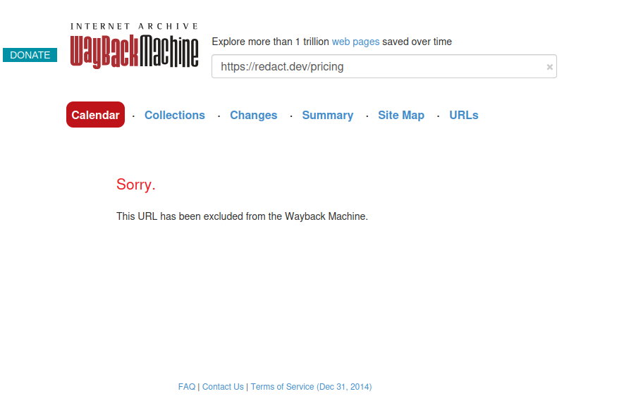
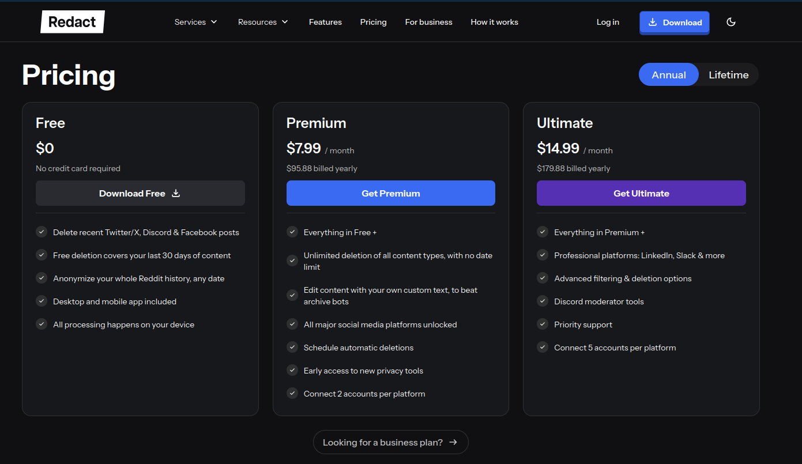

This is about the consumer oriented product Redact Holdings, Inc. offers and makes no comments about whatever they provide businesses
Like many people i use Reddit for tech support and one of those such times i saw a comment that said "This post was anonymized with Redact" and ill be honest it made me curious so i did the only natural thing on the internet and clicked the random link on "redact" and may i say, this is the silliest thing.
they use many buzzwords and cute cartoon cats but it seems to boil down to a few things, deleting sent messages/posts, archiving sent messages, automatic scheduled deletion of all old content and delete by keyword. most of these options really just boil down to deleting things in the same way you could do with your fleshy meat pads called fingers. i actually do see use in the archiving feature as a data hoarder that's actually pretty neat but also not the focus of the product made clear by sayings like "BECOME A DIGITAL GHOST" so i also wont be focusing on it anymore either.
to get to the main point fast this deletes shit. all this product can do is hit the same "delete message" buttons you can don't get confused and think its deleting anything from servers directly whatever you delete will stay on those servers for however long is in that services privacy policy. you want to delete all those embarrassing messages in that furry discord server so nobody can screenshot you? audit logs that built into every discord server might only say a message was deleted and not include deleted message contents but any sane server admin has their own logs which do plus there are platforms out there that scrape discord servers and host archives fully on their own servers there is nothing you can do about those two things. trying to remove your twitter nazi posting because you finally realized you need a job? what do you really think twitter isn't actively backed up? you may get lucky and your page was never archived but its common for 3rd party sites to backup tweets so they can be viewed post deletionadmittedly twitter is working to try and stop this so it may not always be true but the internet often finds a way so i wouldn't really count on it look i understand the why somebody would find this appealing especially if they went from very public online to experiencing something that necessitates much more privacy (e.g. you picked up a stalker) but the way i see it everything this app does has an easy workaround if someone really wanted to see what you put online and if you're worried about any type of government power the idea this would help is extremely laughable.
if this project was something smaller i would be less mean about it but if you want to "delete" anything older than 30 daysthe time limit apparently doesn't apply to reddit which nice i guess but seeing as i found this product from a reddit comment i don't think its going out on a limb to say that's for self promotion if that's fine with you who cares you need to pay AT LEAST $7.99 a month billed annually exclusively so almost 100$ for again, the cheapest option. which also doesn't give you access to every platform either. if you want "professional platforms" you need to fork over 15 a month which again only being yearly billing, is $180. you could also buy lifetime access for $245 for the cheaper plan and $385 for the more expensive option. in my opinion this billing method is to stop people from hitting and quitting it aka paying for a month using it as they need and leaving which i think personally is a consumer right.for clarity yes there is a free tier with the 30 day limit as well as only working for twitter, discord and Facebook for deletion and quote "Anonymize your whole Reddit history, any date"
now i was going to add a link to the pricing page as my source for this and as we are on the topic of archives i was going to add it to the Wayback machine and link that page but for some reason, as far as i can tell redact must have asked to not be scraped and put on the Wayback machine. while this isn't inherently bad it sure is lame. instead here is a screenshot with a link that might show something else far enough in the future


they also include an anti data broker service (think Delete me or Incogni) and i have other issues with these kinds of sites already so I'm leaving that rant for another time but you can always go find other resources about it like this great Youtube video about the topic but if you are a resident of California you can actually do the same thing if not better (idk how their process works in particular with certainty) to quote the pinned comment on the linked video, "if you live in CA, you can get this all done by the state's new DROP system. They support over 500 data brokers, which is almost double that of these services, and it's totally free. Learn more here: https://privacy.ca.gov/drop/"
I think this topic upset me enough to open notepad because this product targets people who are scared which is a tradition as old as time. I'm sure they have some users that had some money to burn who are in no danger doing it mostly for shits and giggles and who cares live your life but the main target is people who are afraid of something and if that danger is real, which it very well may be, i really don't want someone placing their trust in this service.
to end on a positive thing its actually pretty neat that even on the free tier "All processing happens on your device" and the privacy policy is actually pretty good if followed.
if this service is great for you I'm genuinely happy you found something you wanted and don't let me stop you i just like bitching but for the rest of the broke bitches, if you want messages that disappear and actually stay gone signal is your best bet. if you don't want things on Twitter, Reddit, Youtube etc just stop fucking posting and if want to delete already posted stuff just delete them yourself and save the money your outcome will be the same either way.